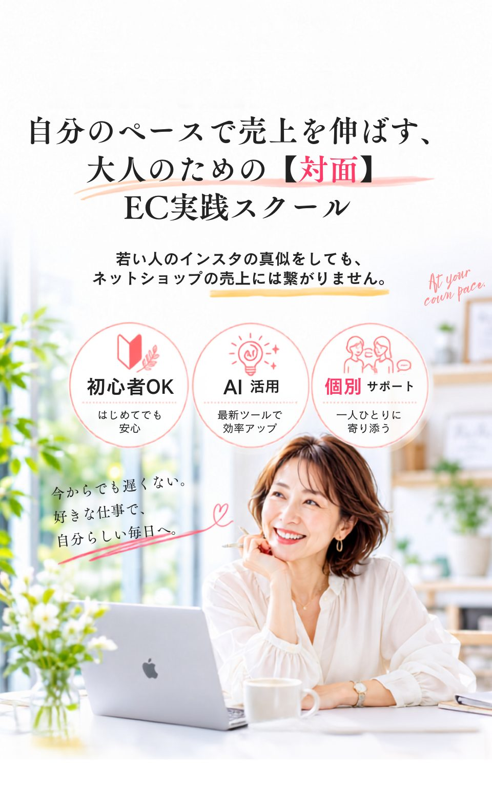

Instagram × EC × AI ｜ 自分のペースで売上を伸ばす、大人のための【対面】EC実践スクール

こんなお悩みはありませんか？

Instagramのフォロワー、
どうしたら増えるの…？
と焦っていませんか？
「バズらせる方法」ではなく「地に足のついた、続けられるやり方」が実は大切です。
AIで画像を作ればいいの？
そもそもAIって
何ができるの？
使いこなす前に、まず「何に使えるのか」を知るところから、一緒に始めましょう。
Canvaの使い方は
なんとなくわかるけど、
トンマナが作れない…
「なぜこの色・このフォントか」という判断軸を身につければ、投稿がブレなくなります。
「起業」と考えると
大げさで、
一歩が踏み出せない…
今すでに持っている資格や経験を、無理なく形にするだけで十分です。
良いものを
作っている自信はあるのに、
値段だけで比較される…
こだわりや想いを、言葉と写真で伝えるページの作り方を身につけます。
操作でつまずいた時、
周りに気軽に
聞ける人がいない…
対面・少人数だからこそ、その場でつまずきを解消しながら進められます。
頑張って投稿しているのに、
"売れない"のは
自分の才能がないから…？
売れない原因は才能ではなく、「伝え方の設計」であることがほとんどです。
リールを作った方が
いいのは分かっているけど、
何を撮ればいいか分からない…
スマホひとつで、続けられる「型」を一緒に形にしていきます。
← スワイプ、またはクリックで送れます →
そのお悩み、すべて
大人のための
【対面】EC実践スクールが解決します

教えるのは、同じ世代を生きる
「いくりん先生」
いくりん先生
EC歴17年（楽天・Yahoo!ショッピング・Amazon・自社EC）
Instagram×EC導線コンサルタント
「AIを使いこなして、もっと楽になりたい」「売上を伸ばしたいけど、何から始めればいいか分からない」――そんな相談を受けるようになったのが、このスクールのはじまりでした。
周りの友人や知人から、Instagramで見かけるキラキラした投稿への戸惑いや、オンライン完結の高額な講座への抵抗感について、ぽつぽつと相談されるようになり、気づけば口コミで広がっていきました。
私自身、17年間EC業界に携わり、楽天・Yahoo!ショッピング・Amazonといったモールから自社ECサイトの立ち上げ・運営まで一通り経験してきました。現在は、スモールビジネスオーナーの皆さんに向けて、Instagram×ECの導線づくりや、Canva・ショート動画アプリの使い方、ECサイト制作のサポートを行っています。
プログラミングの経験はありませんでしたが、AIを使うことで、CSVデータの処理や画像の一括加工まで自分でこなせるようになりました。難しい専門知識がなくても、AIを味方につければここまでできる、ということを身をもって実感しています。
もともとパソコン教室の講師をしていたこともあり、「教える」ことには経験があります。だったら、画面越しではなく直接お会いして、同じ50代・60代を生きる一人として、寄り添いながらお手伝いできるのではないか――そう思って、このスクールを立ち上げました。
ちなみにこのLPも、私自身がAI(chatGPT&Gemini&Claude)と一緒に作ったものです。
ワンオペの限界を突破した、
4人のオーナーの真実
-
01
毎日インスタ投稿しても売れなかった日々が、講義で「購入への動線」を整えただけでまさかの売上3倍に。無駄な作業が消え、今、ショップ運営が本当に楽しいです
-
02
AIってわかる文章すぎてムリだったけど、ワークで「自社のブランドコンセプトを学習させるコツ」を掴んで一変。私らしい温かい文章が3秒で完成して感動しています
-
03
忙しすぎて体調を崩しながらも頑張っていましたが、「コア業務以外を手放す仕組み」を一緒に作ったことで不安が解消。初めて人に任せられて心が軽くなりました
-
04
一人で動画講座を見ていた時は迷子ばかりでした。私の商材を前に「ここのページをこう直そう」と個別で直接アドバイスをもらえる安心感は、やっぱり別格です
次は、あなたが
1人の限界を突破する番です


Bloom Web Schoolが
選ばれる3つの理由
-
理由 01
オンラインではない、直接あなたの隣で導く
「完全対面レッスン」動画教材や画面越しでは解決できない、細かな操作の不安をゼロにします。あなたのパソコンやスマホを直接一緒に見つめながら、その場で丁寧にレクチャー。機械が苦手な方でも、その日のうちに「できた！」という確信を持ち帰っていただけます。
-
理由 02
個人ショップに特化した
「売れる動線」と「仕事の切り分け」毎日の発信に追われ、体調を崩す働き方はもう終わりです。売上に直結する購入動線を整えて無駄な作業をカット。さらに、1人の限界を突破するための「外注化」まで仕組み化し、心と体のゆとりある持続可能な運営へ導きます。
-
理由 03
あなたの想いをそのまま
ファンへ届ける「独自のAI文章術」冷たい自動生成文ではなく、あなたのブランドコンセプトやファンへの温かい想いをAIに正しく学習させる独自カリキュラムです。文章作成の時間を劇的に減らしながらも、あなたらしい言葉でファンを魅了し続ける技術が身につきます。
少人数で、温かく、確実に。
あなたのショップを成長させる第一歩
開催エリア
◯◯県◯◯市周辺（詳しい会場は、無料相談のご予約後に個別にご案内します）
-
STEP 01
【かんたん予約】
スマホからご希望の日時を選ぶだけで、1分でお申し込みが完了します。
-
STEP 02
【少人数での無料相談】
同じようにワンオペの限界に悩む仲間（少人数）と一緒に、リラックスした雰囲気でスクールの体験説明を受けられます。オンラインではない、対面ならではの温かい空気感を感じてください。
-
STEP 03
【あなたに最適なクラスのご提案】
「インスタの動線を整えたい」「AI文章や動画を学びたい」といったご希望に合わせ、どのようにステップアップしていけるか、実際のスクールの進め方を丁寧にご案内します。
こんな「欲しかった」が
すべて叶う場所
-
動画を見るだけのオンラインではなく、直接会って教えてほしい
-
画面越しじゃわからない操作を、その場で手取り足取り解決したい
-
ただのフォロワー増やしではなく、ショップの売上に繋げたい
-
「見るだけで買わない」お客さまを、迷わない購入動線へ導きたい
-
1人で抱えきれないワンオペ作業を、上手に人に任せたい
-
AIの冷たい言葉ではなく、私の想いをのせた温かい文章を作りたい
-
スマホでの動画の撮り方まで、その場で一緒に形にしたい
スクールに来たら、
これができるようになります
誰にも聞かずに、一人でネットショップを操作できるようになる
フォロワー数に関係なく、今いる人に届けて売れるようになる
SNSを"義務"ではなく、続けられるペースでやれるようになる
自分の作品・技術の価値を、値段で判断されずに伝えられるようになる
"売れない"を自分の才能のせいにしなくてよくなる
「起業」ではなく、今の自分のままで一歩踏み出せるようになる
操作画面でつまずいても、その場で解決できるようになる
同世代・同じ立場の受講生との、つながりができる
よくあるご質問
-
01 Q
操作が苦手でもついていけますか？
Aはい、大丈夫です。動画講座とは違い、直接お会いしてあなたの手元に合わせて進める少人数制です。置いてきぼりには絶対にしません。
-
02 Q
まだ始めたばかり（準備中）ですが大丈夫ですか？
Aもちろん歓迎します。最初から「売れる動線」を正しく作れるため、無駄な遠回りをせずにショップを成長させることができます。
-
03 Q
無理な勧誘はされませんか？
A強引な勧誘は一切いたしません。少人数で温かいスクールの雰囲気が、ご自身に合うかどうかをじっくりご判断ください。